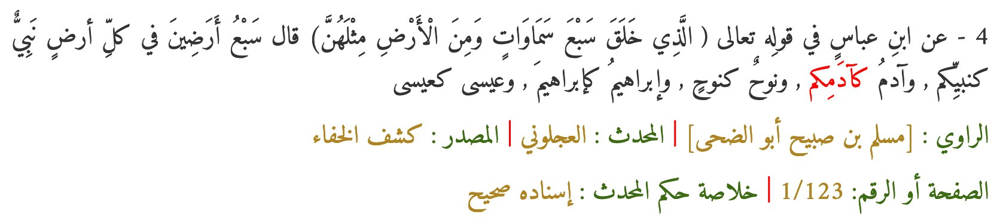

دعوة للتفكير
هل توجد سبعة أراضين؟
مقدمة
ذكر الله عز وجل في كتابه صراحة أن هنالك سبع سماوات في أكثر من موضع وفي أكثر من سياق مختلف. منها:
سورة البقرة - آية 29
هو الذي خلق لكم ما في الارض جميعا ثم استوى الى السماء فسواهن سبع سماوات وهو بكل شيء عليم
قل من رب السماوات السبع ورب العرش العظيم
سورة المؤمنون - آية 86
بل أن السماء جاءت بصيغة الجمع في أكثر من مئة موضع في كتاب الله عز وجل
ولله جنود السماوات والارض وكان الله عزيزا حكيما
النقطة الأهم
بالمقابل لا توجد آية واحدة في كتاب الله عز وجل ذكر الله فيها صراحة أن هنالك سبعة أراضين بل لم تُذكر الأرض في كتاب الله عز وجل ولا مرة واحدة بصيغة الجمع!
سؤال
من أين جاءت فكرة السبعة الأراضين؟
الجواب
استنتج بعض أهل العلم ذلك من خلال آية واحدة فقط من كتاب الله عز وجل ليست صريحة وهي:
الله الذي خلق سبع سماوات ومن الارض مثلهن يتنزل الامر بينهن لتعلموا ان الله على كل شيء قدير وان الله قد احاط بكل شيء علما
سورة الطلاق - آية 12
وأيضاً أكدوا استنتاجهم بوجود أحاديث “حُكم عليها بالصحة” تؤكد ذلك ومنها ماهو موجود في كتاب البخاري و كتاب مسلم ومنها:
مَن ظَلَمَ مِنَ الأرْضِ شيئًا طُوِّقَهُ مِن سَبْعِ أَرَضِينَ.
صحيح البخاري
مَن أخَذَ شيئًا مِنَ الأرْضِ بغيرِ حَقِّهِ، خُسِفَ به يَومَ القِيامَةِ إلى سَبْعِ أرَضِينَ.
صحيح البخاري
مَن ظَلَمَ قِيدَ شِبْرٍ مِنَ الأرْضِ، طُوِّقَهُ مِن سَبْعِ أَرَضِينَ
صحيح مسلم
أيُّما رجُلٍ ظلَم شِبرًا مِن الأرضِ كُلِّفه أنْ يحفِرَه حتَّى يبلُغَ سبعَ أرَضينَ ثمَّ يُطوَّقَه يومَ القيامةِ حتَّى يُفصَلَ بيْنَ النَّاسِ
صحيح ابن حبان
مَنْ أخذَ مِنَ الأرْضِ شيئًا بغيرِ حقِّهِ ، خُسِفَ بِهِ يومَ القيامَةِ إلى سبْعِ أرَضينَ
صحيح الجامع - للألباني
نقطة التفكير
قرآنياً فالأية الوحيدة الغير صريحة تحتمل عدة تفسيرات بالذات إذا ما تم ربطها بالأيات الأخرى و سأذكر الآيات الأخر التي تشير ضمنياً إلى عدم تأييد فكرة السبعة الأراضين.
حديثياً فتقريباً كل الأحاديث التي ذُكر فيها فكرة السبع الأراضين كانت للتخويف والتهويل من سرقة أو إقتطاع جزء ولو شبر من أرض شخص أخر كما شاهدنا في الأعلى و هذه الأحاديث فيها مشكلتين ظاهرتين:
الأولى وهي أن الأحاديث تختلف في النص و تختلف في طريقة التعذيب فمرة تطويق ومرة خسف و مرة حفر وهذا يجعلنا نشك في صحتها.
الثانية وهي إظهار أحد الصحابة وهو سعيد بن زيد من أوائل من أمن ومن “المبشرين بالجنة” أنه غير رحيم و أنه لا يتورع عن الدعاء على المسلمين.
أنَّ أَرْوَى بنْتَ أُوَيْسٍ، ادَّعَتْ علَى سَعِيدِ بنِ زَيْدٍ أنَّهُ أَخَذَ شيئًا مِن أَرْضِهَا، فَخَاصَمَتْهُ إلى مَرْوَانَ بنِ الحَكَمِ، فَقالَ سَعِيدٌ: أَنَا كُنْتُ آخُذُ مِن أَرْضِهَا شيئًا بَعْدَ الذي سَمِعْتُ مِن رَسولِ اللهِ صَلَّى اللَّهُ عليه وسلَّمَ، قالَ: وَما سَمِعْتَ مِن رَسولِ اللهِ صَلَّى اللَّهُ عليه وسلَّمَ؟ قالَ: سَمِعْتُ رَسولَ اللهِ صَلَّى اللَّهُ عليه وسلَّمَ يقولُ: مَن أَخَذَ شِبْرًا مِنَ الأرْضِ ظُلْمًا، طُوِّقَهُ إلى سَبْعِ أَرَضِينَ، فَقالَ له مَرْوَانُ: لا أَسْأَلُكَ بَيِّنَةً بَعْدَ هذا. فَقالَ: اللَّهُمَّ، إنْ كَانَتْ كَاذِبَةً فَعَمِّ بَصَرَهَا، وَاقْتُلْهَا في أَرْضِهَا. قالَ: فَما مَاتَتْ حتَّى ذَهَبَ بَصَرُهَا، ثُمَّ بيْنَا هي تَمْشِي في أَرْضِهَا، إذْ وَقَعَتْ في حُفْرَةٍ فَمَاتَتْ.
صحيح مسلم
رغم أن الله عز وجل يصف محمد صلى الله عليه وسلم و من آمن معه بأنهم رحماء بينهم!
مُّحَمَّدٌ رَّسُولُ اللَّهِ ۚ وَالَّذِينَ مَعَهُ أَشِدَّاءُ عَلَى الْكُفَّارِ رُحَمَاءُ بَيْنَهُمْ
ويوجد نقل عن ابن عباس في هذا الموضوع يستشهد به المؤمنون بالأكوان المتعددة!

قرآنياً
توجد الكثير من الآيات التي إذا ما تم التأمل فيها فهي تنفي فكرة الأراضين السبع أو لا تدعمها - مع التأكيد على أن الله عز وجل قادراً على كل شيء - ومنها:
ان ربكم الله الذي خلق السماوات والارض في ستة ايام
سورة يونس - آية 3
يوم تبدل الارض غير الارض والسماوات وبرزوا لله الواحد القهار
سورة إبراهيم - آية 48
ان كل من في السماوات والارض الا اتي الرحمن عبدا
سورة مريم - آية 93
ويوم ينفخ في الصور ففزع من في السماوات ومن في الارض الا من شاء الله وكل اتوه داخرين
سورة النمل - آية 87
انا عرضنا الامانة على السماوات والارض والجبال فابين ان يحملنها واشفقن منها وحملها الانسان انه كان ظلوما جهولا
سورة الأحزاب - آية 72
وسخر لكم ما في السماوات وما في الارض جميعا منه ان في ذلك لايات لقوم يتفكرون
سورة الجاثية - آية 13
قُلِ انظُرُواْ مَاذَا فِي السَّمَاوَاتِ وَالأَرْضِ وَمَا تُغْنِي الآيَاتُ وَالنُّذُرُ عَن قَوْمٍ لاَّ يُؤْمِنُونَ
سورة الجاثية - آية 13
توجد آيات كثيرة جداً غيرها ولكن نرى جلياً في هذه الأيات أن الله سخر لنا مافي السماوات والأرض وليس الأراضين ودعانا للنظر في السماوات والأرض وليس الأراضين و عرض الأمانة على السماوات والأرض وليس الأراضين ويوم ينفخ في الصور فسوف يفزع كل من في السماوات والأرض وليس الأراضين وغيرها الكثير.
ليس من المنطق في نظري إدعاء أن تفسير الأراضين السبع هو طبقات الأرض فطبقات الأرض جزءً من تكوينها وليس أراضي أخرى
محمد جبلي
الجمعة ٢٣ جماد الثاني ١٤٤٠ هجري
برزبن - استراليا